Estas son las comparsas por bandos con mas personas apuntadas
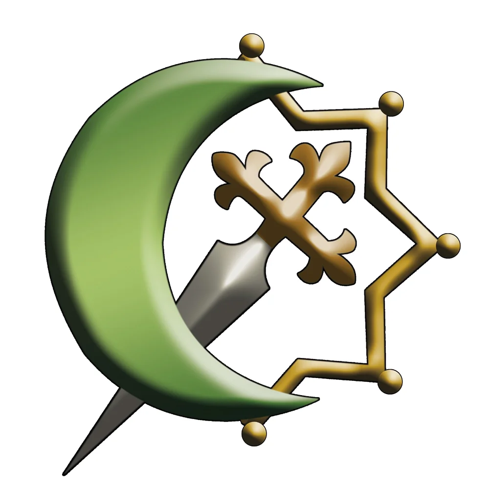
Origen del nombreMusta-rab, "arabizados", es el nombre con el que se conocía a la población cristiana de origen hispanovisigodo que vivía en el territorio de Al-Ándalus. Obligados a pagar impuestos a los sarracenos, conservaron su organización política, jurídica y eclesiástica. Pero con la llegada primero de los almorávides, y posteriormente de los almohades, su situación se deterioró y acabaron siendo masacrados, esclavizados y expulsados. Fundación. La más reciente comparsa mora comienza su andadura en 2003, pero empieza a desfilar en el año 2004. Su primer presidente fue Joaquín Rodríguez Marín. Rol en las fiestas. Los Mozárabes forman parte del bando moro, uno de los cinco grupos que integran ese bando dentro de la Agrupación de Comparsas de Moros y Cristianos de Almansa. La comparsa ha presidido la Entrada Mora como capitanía. Vestimenta. Los socios visten pantalón ancho a media pierna de color naranja, sujeto por un fajín rayado en tonos naranjas y crudos, y por encima otro más estrecho de color naranja. La camisa es de color crudo y lo completan unas botas altas negras a media pierna. El traje femenino se compone de pantalón bombacho naranja cubierto por una falda diagonal del mismo tono, camisa en color crudo y una casaca naranja, todo sujeto con fajín a rayas crudas y naranjas. La sede de los Mozárabes de Almansa se encuentra en la calle Lope de Vega. Cada año, desde 1977, entre el 1 y el 6 de mayo, los desfiles de moros y cristianos son parte principal de las fiestas de Almansa, con un peculiar atractivo al celebrarse en torno al castillo. Las Fiestas Mayores de Almansa fueron declaradas de Interés Turístico Internacional el 25 de abril de 2019.
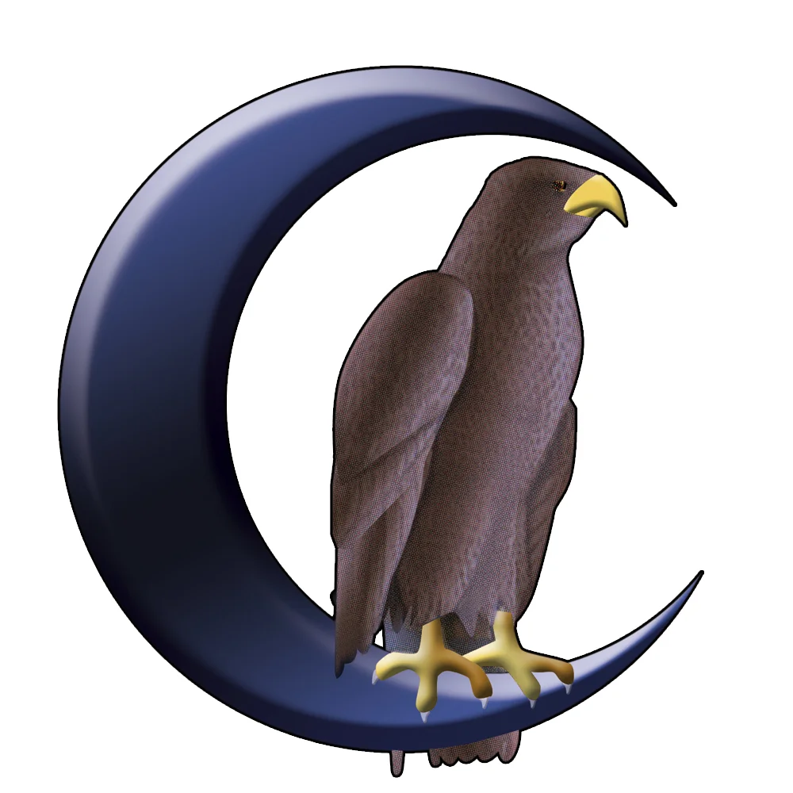
Origen del nombre El nombre Beduino proviene de la palabra árabe Bedawi, que significa "morador del desierto". Su principal característica fue el sentido de la hospitalidad, el honor y el valor guerrero, así como el aprecio a la poesía y a la elocuencia, lo que les sirvió para preservar la memoria del pueblo. Fundación: La comparsa fue fundada en 1979, realizando su primer desfile por las calles de Almansa en 1980. Su primer presidente fue José Luis Martínez del Fesno, y la primera abanderada de la comparsa fue Salvadora Osma Cuenca. Trayectoria: Fundada con más de 500 socios en sus filas, la comparsa ha sabido mantener viva la esencia de los Bedawi. Desde su primer desfile en 1980, los Beduinos no han dejado de aportar elegancia y una identidad única al bando moro. En 2025, la comparsa ostentó la Capitanía Mora en la Entrada Mora de las Fiestas Mayores. Símbolo: Los Beduinos son identificados en las calles por su halcón mirando hacia Oriente sobre la media luna. Vestimenta: La indumentaria que caracteriza a los moros Beduinos está compuesta por pantalón bombacho blanco, fajín granate, camisa azul y chaleco negro de terciopelo con pasamanería dorada. El traje femenino se compone de pantalón y camisa blancos, y una casaca negra bordada con medias lunas doradas por todo su contorno. Sede: La sede de los Beduinos de Almansa está en la calle Juan Ramón Jiménez nº 10.
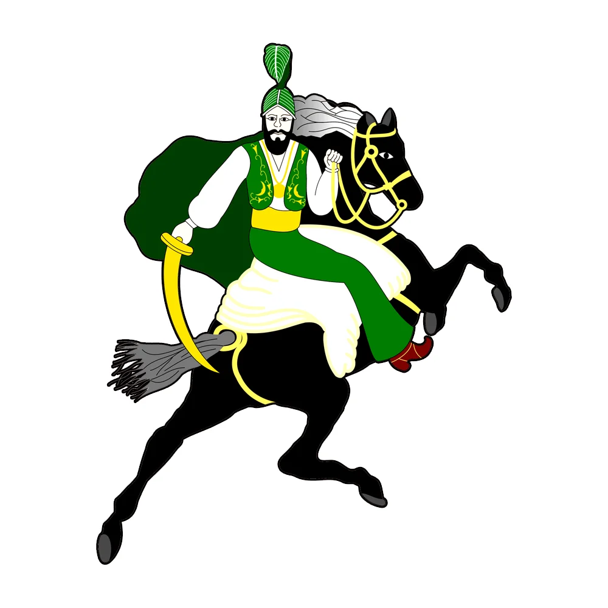
Origen del nombre: Los antiguos cronistas pensaban que el topónimo "Almanza" derivó en "Almansa", pues del origen árabe de la fortaleza almanseña no tenían dudas. Uniendo esa raíz árabe con el gentilicio de los habitantes, surgió el nombre de Almanzárabes, creando así un topónimo del moro almanseño. Fundación: Son la comparsa más antigua de Almansa y de todas las Fiestas de Mayo. Fueron fundadas en 1976 y salieron a la calle por primera vez en las Fiestas de 1977, acompañados por la comparsa Alagoneses de la vecina localidad alicantina de Sax. En 1980 ya se presentan oficialmente como "Comparsa Almanzárabes. Los verdes". Fueron además los encargados de invitar a otras comparsas de localidades cercanas para participar en los primeros desfiles que se organizaban a finales de los años 70. Apodo: Son reconocidos en la ciudad como "Los Verdes", ya que ese es el color que los distingue en los desfiles y por las calles de Almansa. Vestimenta: Su traje oficial está compuesto por pantalón bombacho de color verde, camisa blanca con elegantes bordados verdes y dorados en cuello y puños, chaleco verde de raso bordado con motivos dorados y fajín amarillo. El turbante es verde con un frontal dorado metálico y dos velos de color blanco y verde. Sede: La sede de la comparsa Almanzárabes está en la calle de la Industria nº 26.
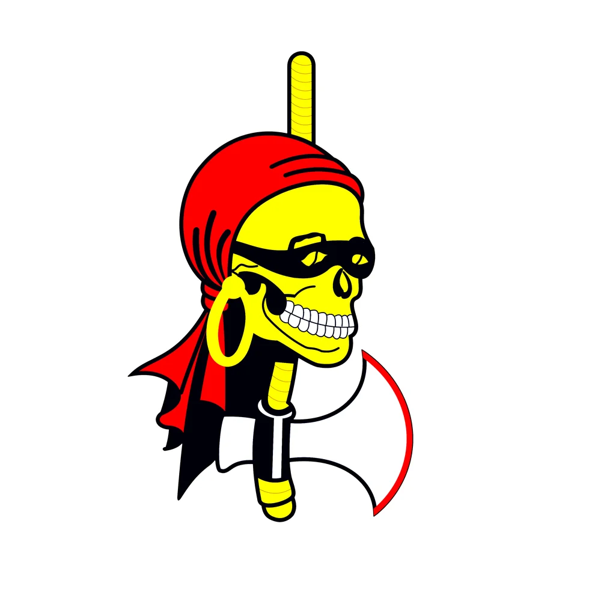
Origen del nombre: Los piratas fueron mercenarios errantes que saquearon los buques españoles durante siglos, siendo un auténtico quebradero de cabeza para el imperio español forjado en el mar. Su espíritu aventurero, libre y temido en los mares es el que representa esta comparsa dentro de las Fiestas de Mayo. Fundación: La comparsa fue fundada en 1982, realizando su primer desfile por las calles de Almansa en 1983. Su primer presidente fue Francisco de Ves Esteban y su primera abanderada, Eve Gandía Tomás. Ese mismo año mostraron su interés por entrar a formar parte de la Agrupación de Comparsas, siendo admitidos el 22 de junio de 1982 en el bando cristiano, completando así las cinco comparsas que forman dicho bando en la ciudad. Rol en las fiestas: Los Piratas forman parte del bando cristiano, siendo una de las cinco comparsas que lo integran junto a Mosqueteros, Almogávares, Templarios y Corsarios. Símbolo: Su logo es una calavera con antifaz y pañuelo, acompañada de una gran hacha de filo rojo, fiel reflejo de su identidad pirata. Vestimenta: El atuendo de los Piratas está compuesto por botas negras, pantalón negro y camisa blanca con encaje dorado en los puños. Por encima va colocada una casaca cruzada al centro con pasamanería plateada y dorada, así como piezas doradas de metal en su contorno. Lo complementa un cinturón-fajín dorado, y como toques personales, el característico pañuelo pirata a la cabeza o una calavera dorada colgada al cuello. Sede: La sede de los Piratas está en la calle Lope de Vega nº 4, frente a la sede de los Mozárabes.
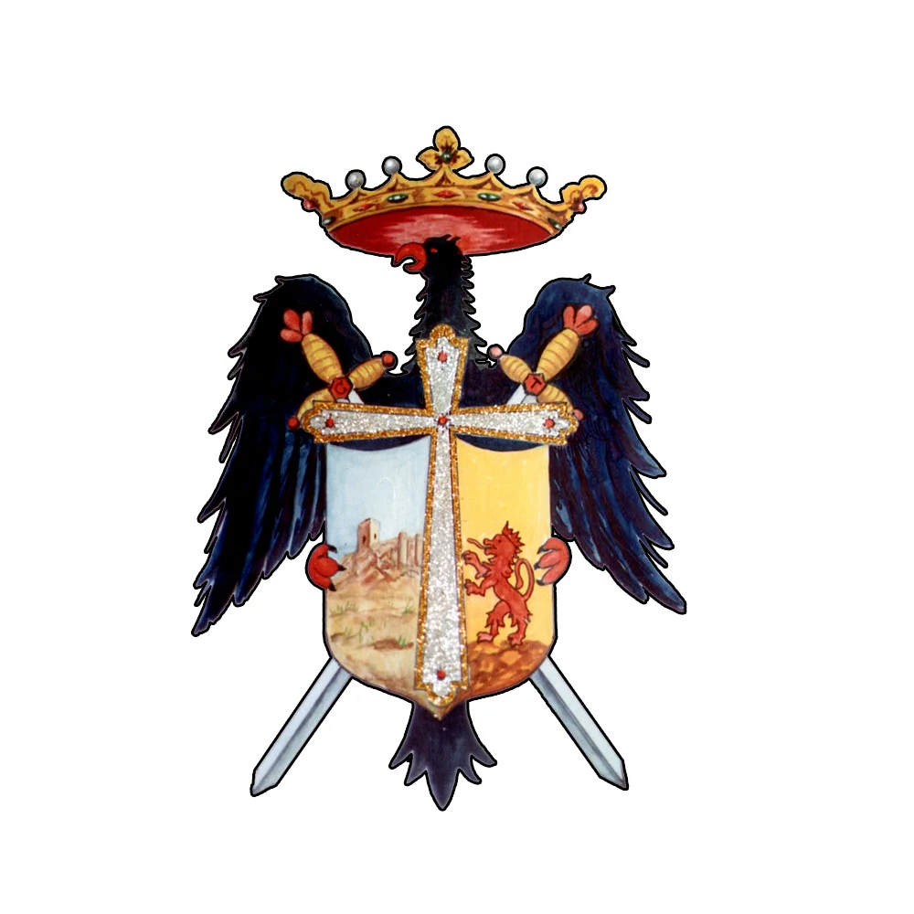
Origen del nombre: La Orden Templaria fue fundada en el año 1118 por nueve caballeros franceses tras la primera cruzada, con el objetivo de escoltar a los peregrinos hasta Tierra Santa. Su lema es Non Nobis, Domine, non Nobis, sed nomini tuo da gloriam ("No a nosotros, Señor, no a nosotros, sino a tu nombre y gloria"). Su denominación y temática está inspirada en esta orden de caballeros, una de las organizaciones militares más poderosas de la Edad Media, cuyo principal objetivo era instaurar una civilización cristiana. Fundación: La comparsa fue fundada en 1979 y realizó su primer desfile durante las Fiestas del año 1980. Su primer presidente fue Francisco Pradas Almendros y su primera abanderada fue Rosana Gimeno García. El escudo que representa a los socios templarios fue creado por el reconocido artista almanseño Sergio Sarrión. Rol en las fiestas: Los Templarios forman parte del bando cristiano, junto a las comparsas Mosqueteros, Almogávares, Corsarios y Piratas. Símbolo: En el pecho llevan un escudo templario en el que destacan las espadas cruzadas, el águila, el león y el campo de Castilla. La cruz roja sobre fondo blanco es también su sello de identidad. Vestimenta: El color que define a esta comparsa es el rojo. Su traje oficial está compuesto por botas negras, mallas y mangas plateadas, y sobre ellas una casaca de terciopelo rojo con acabados en piel de color negro, con el emblema bordado de la comparsa en el centro. También incluye muñequeras y hombreras con cadenas de color dorado, y un cinturón de piel negro que se caracteriza por llevar un águila dorada sobresaliendo en el centro. Sede: La sede de los Templarios se sitúa en la calle Camilo José Cela nº 2.
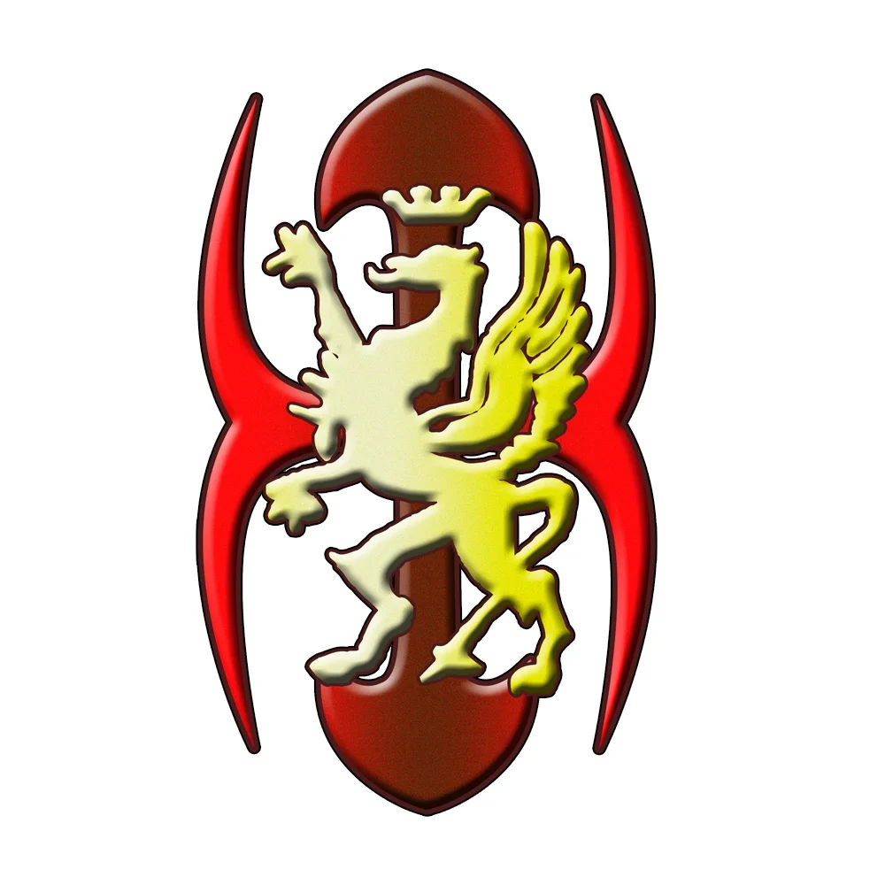
Origen del nombre: La palabra almogávar tiene su origen en el árabe al-mugawir, que significa "el que produce algarabías". Las primeras crónicas se remontan al siglo XII en Aragón, siendo mercenarios y tropas de choque a pie, cuyo grito de guerra al entrar en combate era: ¡Desperta Ferro! ¡Maten, maten! Eran también tropas de espionaje y guerrilla especialmente temidas por el invasor musulmán. Fundación: La comparsa fue fundada en 1979 y desfiló por primera vez por las calles de Almansa en 1980. Su primer presidente fue Joaquín García Sáez. Curiosamente, surgieron como comparsa tras no ponerse de acuerdo con otro grupo de festeros para fundar lo que podría haber sido la comparsa Cruzados. Eslogan: Son conocidos en la ciudad por su frase característica "Bien coño, bien", que aparece ya en el boletín informativo de la comparsa a mediados de los años 80 y les ha acompañado desde entonces. Símbolo: Su insignia es un grifo mitológico coronado en color dorado, que los festeros llevan con orgullo en el pecho durante las fiestas. Vestimenta: Su traje se compone de mallas y mangas de lamé plateadas, cubiertas por una casaca de terciopelo azul marino con la insignia de la comparsa, el grifo dorado, en el centro. Rol en las fiestas: Los Almogávares forman parte del bando cristiano, junto a las comparsas Mosqueteros, Templarios, Corsarios y Piratas. Es una de las comparsas más numerosas de todo el bando cristiano en las Fiestas de Mayo de Almansa.
Ordena las piezas de forma correcta para crear la imagen
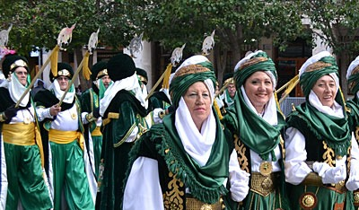
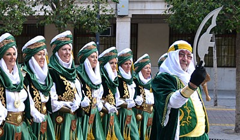
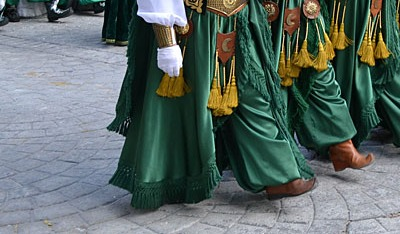
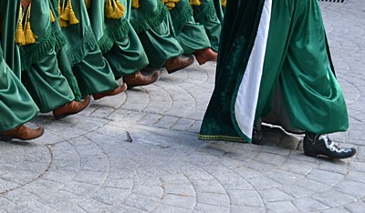
Fotos de las fiestas Mayores de Almansa
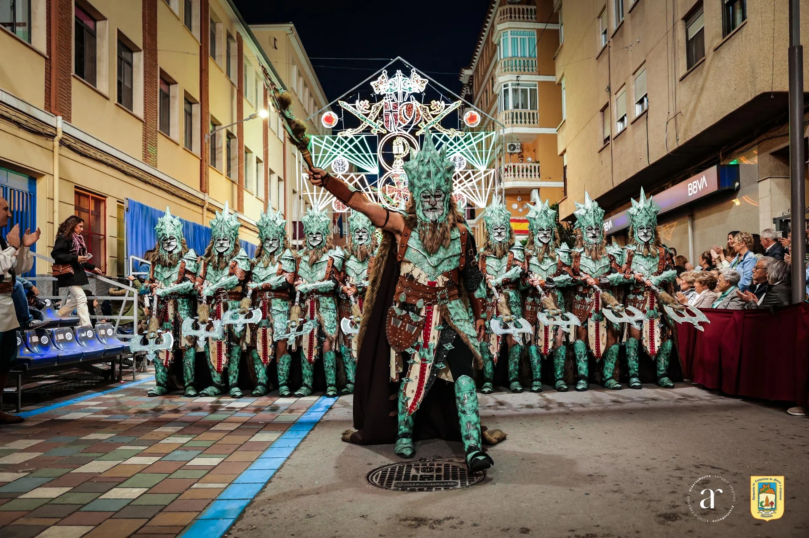
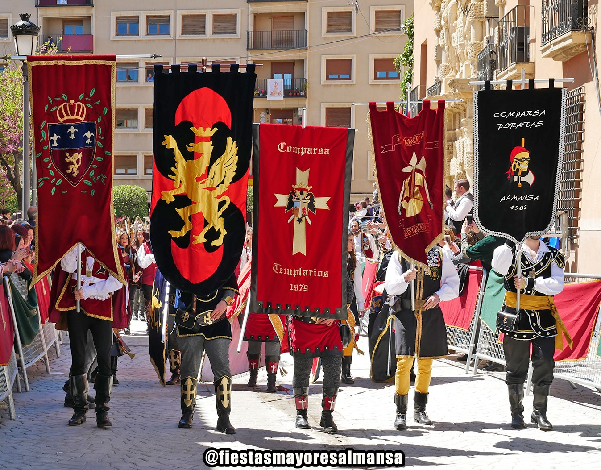
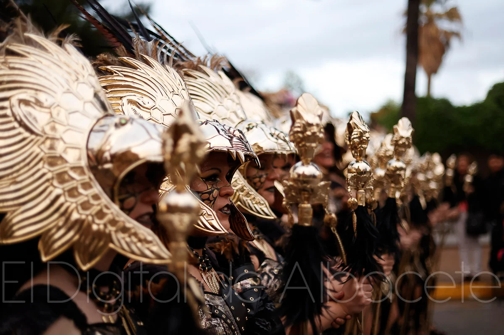
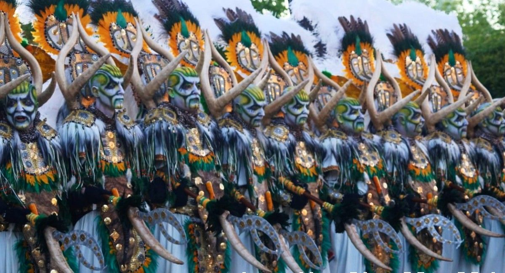
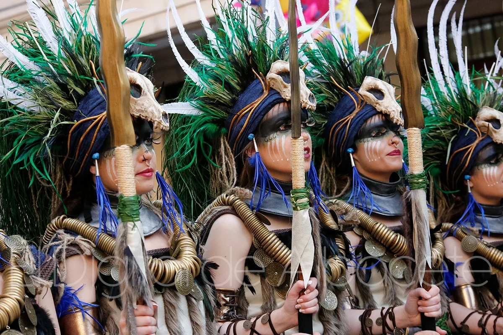
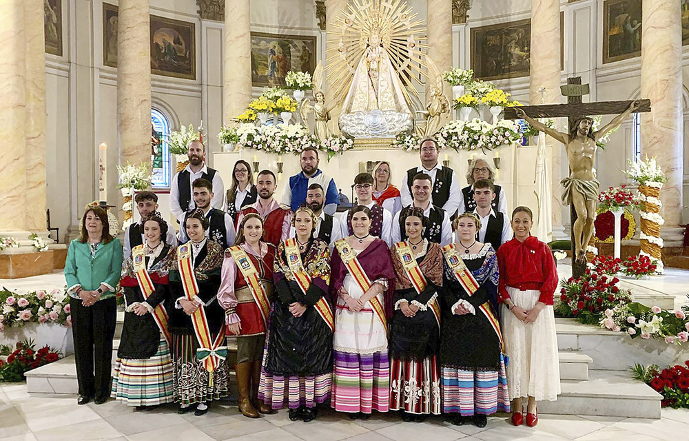